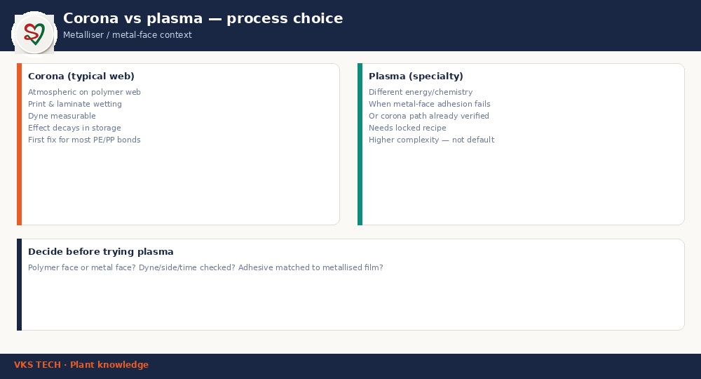

🔵 Plasma Treatment in Metalliser Context — When Corona Is Not Enough
📖 11-min read · Process choice · Metal-face adhesion
Plasma is not a fashionable replacement for corona. On metalliser-linked structures it is discussed when metal-face adhesion fails, or when the corona path (side, dyne, time, electrodes) is already verified and still short. This post helps you decide before buying complexity.
- Failure on polymer face or metal face?
- Dyne / side / treat-to-bond time already proven?
- Adhesive system rated for metallised film?
- Intermittent (process) vs systematic (structure)?

1. Corona vs plasma — practical split
Corona: atmospheric treatment on polymer webs; main tool for print/laminate wetting; dyne measurable; effect decays in storage.
Plasma (specialty): different energy/chemistry options; used when metal-face or hard-to-wet stacks need more than corona can deliver; needs locked recipe (gas/power/speed) and process ownership.
2. Before “trying plasma”
Document the failure: which interface peeled, which humidity, which adhesive batch. Many “need plasma” tickets close after fixing wrong-side treat or expired dyne on the polymer face.
3. If you invest
Lock recipe, train one process owner, and measure adhesion the same way every time. Uncontrolled plasma trials create new scatter without solving root cause.
🔵 मेटलाइज़र संदर्भ में प्लाज्मा ट्रीटमेंट — कब कोरोना काफी नहीं
📖 11 मिनट · प्रोसेस चॉइस · मेटल-फेस आसंजन
प्लाज्मा कोरोना का फैशनेबल विकल्प नहीं है। मेटलाइज़र-लिंक्ड स्ट्रक्चर पर तब चर्चा होती है जब मेटल-फेस आसंजन फेल हो, या कोरोना पथ (साइड, डाइन, समय, इलेक्ट्रोड) पहले ही सही साबित हो और फिर भी कमी रहे। जटिलता खरीदने से पहले निर्णय में मदद।
- फेल्योर पॉलीमर फेस पर या मेटल फेस पर?
- डाइन / साइड / ट्रीट-टू-बॉन्ड समय पहले प्रूव?
- एधेसिव सिस्टम मेटलाइज़्ड फिल्म के लिए रेटेड?
- रुक-रुक (प्रोसेस) या सिस्टमैटिक (स्ट्रक्चर)?
1. कोरोना बनाम प्लाज्मा — व्यावहारिक विभाजन
कोरोना: पॉलीमर वेब पर एटमॉस्फेरिक ट्रीट; प्रिंट/लेमिनेट वेटिंग का मुख्य टूल; डाइन मापनीय; स्टोरेज में प्रभाव घटता है।
प्लाज्मा (स्पेशलिटी): अलग एनर्जी/केमिस्ट्री विकल्प; जब मेटल-फेस या कठिन स्टैक को कोरोना से ज़्यादा चाहिए; लॉक्ड रेसिपी (गैस/पावर/स्पीड) और प्रोसेस ओनरशिप ज़रूरी।
2. “प्लाज्मा ट्राई” से पहले
फेल्योर दस्तावेज़ करें: कौन सा इंटरफेस छिला, कौन सी नमी, कौन सा एधेसिव बैच। कई “प्लाज्मा चाहिए” टिकट गलत-साइड ट्रीट या एक्सपायर्ड डाइन ठीक करने पर बंद हो जाते हैं।
3. अगर निवेश करें
रेसिपी लॉक करें, एक प्रोसेस ओनर ट्रेन करें, आसंजन हमेशा एक ही विधि से मापें। अनियंत्रित प्लाज्मा ट्रायल नए स्कैटर बनाते हैं, रूट कॉज़ नहीं सुलझाते।